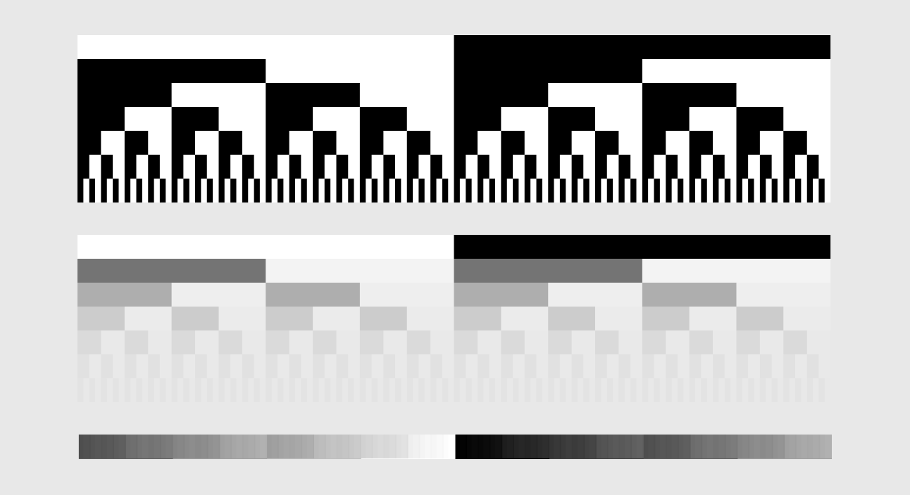
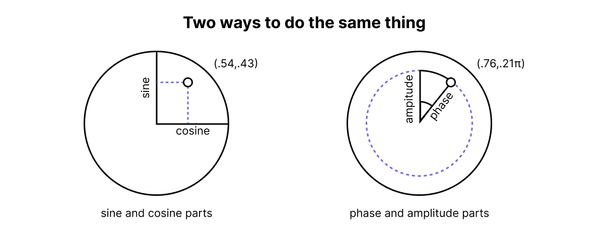
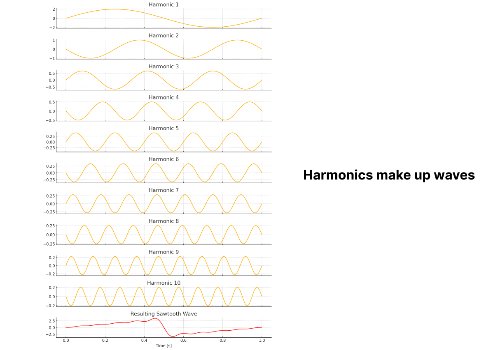

Section 2 - Additive Synthesis
We would refer to "normal synthesis" as subtractive synthesis, since you are creating a complex sound and subtracting the parts of the sound that you don't want, like carving something out of stone. Most synthesizers are subtractive synthesizers. However, you can use parts of subtractive synthesizers to create another form of synthesis called additive synthsis.
Additive synthesis is based on the mathematical theory created by Fourier, that a series of sine and cosine waves can be added together to create any periodic wave. This math was created in the 1800s, but it wasn't fully used or understood until the 20th century. The original idea was to use the series to make predictions about future events such as harvests, but the predictions made by this were mostly incorrect. However, the math, was very useful and it is now in literally everything we do.
Additive synthesis takes a series of waves, and adds them together (or even subtracts in some cases) to create complex waves.
In this case here, you can see how mixing square waves together can create other waves as well, which can be incredibly handy to know if you don't have the CPU power to make these waveforms and want something very mathematically simple but not 100% accurate.
This image shows a series of square waves represented as black and white rectangles. Each square wave is 2 times the frequency of the last one in the sequence, and its amplitude, shown as opacity, is 1/f (0.5, 0.25, 0.125, .062, ...). When mixed together, the square waves form a saw wave.

Additive synthesis is a technique used in sound synthesis where complex timbres are created by combining simpler waveforms, typically sine waves. To understand additive synthesis, it's essential to grasp the concept of sine waves and their properties.
Sine Waves:
A sine wave is a fundamental waveform that represents a pure tone at a single frequency. It is a smooth, periodic oscillation that follows a mathematical sinusoidal function. Sine waves are the building blocks of additive synthesis because they have a simple, predictable shape and contain no harmonics or overtones.
Mathematically, a sine wave is defined as a function of time, where the amplitude (height) of the wave varies according to the sine of the angle (phase) of a point moving around a circle. The complete rotation around the circle represents one period of the sine wave.
Cosine Waves: Closely related to sine waves are cosine waves. While a sine wave starts at zero amplitude and reaches its peak at a quarter of the way around the circle (π/2 radians or 90 degrees), a cosine wave starts at its peak amplitude and reaches zero at a quarter of the way around the circle. Cosine waves are essentially sine waves shifted by a quarter of a period.
Additive Synthesis:
In additive synthesis, sine waves of different frequencies and amplitudes are combined to create more complex sounds. By carefully choosing the frequencies and amplitudes of the sine waves, you can approximate the timbres of real instruments or create entirely new sounds.
The process involves:
- Selecting the fundamental frequency, which determines the pitch of the sound.
- Adding sine waves at integer multiples of the fundamental frequency (harmonics) to shape the timbre.
- Adjusting the amplitudes of the individual sine waves to control the relative strengths of the harmonics.
- Optionally, introducing slight variations in frequency and amplitude over time to create a more dynamic and interesting sound.

Phase and Amplitude:
When combining sine waves in additive synthesis, two important parameters come into play: phase and amplitude.
Phase refers to the starting point of a sine wave relative to a reference point. By adjusting the phase of individual sine waves, you can control when each wave starts and ends within the overall waveform. This is important because the phase relationships between the sine waves can drastically affect the resulting timbre.
Amplitude determines the loudness or intensity of each sine wave. By setting the amplitudes of the individual sine waves, you can control the relative strengths of the harmonics and shape the overall spectrum of the sound.
Formants are regions of concentrated energy in the frequency spectrum of a sound. They are particularly important in speech and singing, as they contribute to the distinct timbres of different vowels and voices. In additive synthesis, formants can be created by carefully adjusting the amplitudes of specific sine waves to mimic the resonant frequencies of the human vocal tract or other acoustic systems.
Facts about sine waves Because it's a single tone and doesn't have any other complex frequencies, it makes it hard for our brain to understand when the period of the tone begins and when it ends. This is important to understand if you are making ring tones or other alert sounds because our ears have a hard time locating where the sound is coming from, as there is no reference. I could go more into the cochlea and timpanic nerve.
To make matters worse, if there is a reflection, it can dampen out the original sound making it harder to hear in the anodes in the air. This is called interference.
2.1 Combined waveforms

To create a saw wave, we need to create a series of sine waves with an amplitude that is 1 divided by the number on the series. So, the first sine wave would have an amplitude of 1/1, the second would have an amplitude of 1/2, 1/3, so on so forth.